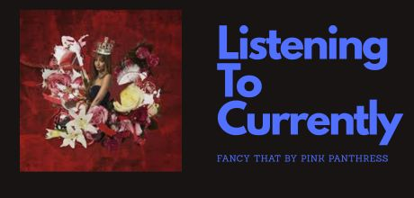
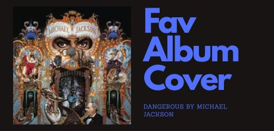

| Album | Artist | Genre | Year |
|---|---|---|---|
| Dangerous | Michael Jackson | Pop | 1991 |
| By the Way | Red Hot Chili Peppers | Rock | 2002 |
| I Care 4 U | Aaliyah | RnB | 2002 |
| B-Day | Beyonce | Pop | 2006 |
| Broke with Expensive Taste | Azealia Banks | Pop | 2014 |
| Currents | Tame Impala | Indie Rock | 2015 |
| Queen | Nicki Minaj | Hip Hop | 2018 |
| Esi | Slater | Alternative | 2021 |
| Fancy That | Pink Panthress | Pop | 2025 |
| Man's Best Friend | Sabrina Carpenter | Pop | 2025 |
| 10 Albums | 4 Decades | 1991–2025 |


Why These Albums?
Music has always been more than just background noise to me — it is a feeling, a memory, and sometimes a whole identity. The ten albums on this list represent some of the most important music I have ever encountered, spanning four decades of artists who were not afraid to be exactly who they were. From Michael Jackson's Dangerous in 1991 to Sabrina Carpenter's Man's Best Friend in 2025, every record here caught me at a moment where I pressed play and simply could not stop
What draws me to these albums is how different they all are from each other yet how naturally they sit together. Michael Jackson's Dangerous set the standard for pop perfection early on, while Aaliyah's I Care 4 U showed the world how RnB could feel both powerful and vulnerable at the same time. Beyonce's B-Day brought an unapologetic confidence that still hits just as hard today. Then there is Tame Impala's Currents, which completely changed how I thought about what a indie record could sound like — layered, dreamy, and deeply personal all at once.
What Makes a Great Album?
A great album, to me, is one where you never reach for the skip button. Every track earns its place. Azealia Banks proved that with Broke with Expensive Taste, a record so dense and creative that it rewards you differently every time you listen. Nicki Minaj's Queen and Red Hot Chili Peppers' By the Way share that same quality — albums where the artists were clearly operating at their absolute peak and knew it.
What excites me most about this list is how the newest entries hold up just as strongly as the classics. Pink Pantheress with Fancy That and Sabrina Carpenter with Man's Best Friend represent a new generation of artists who understand melody and storytelling at a level that feels timeless. Slater's Esi is a personal favorite that most people may not know yet, but that is exactly what makes it special. Great music does not always come with a huge spotlight. Sometimes the best albums are the ones you discover quietly and keep to yourself for a while before sharing them with the world.